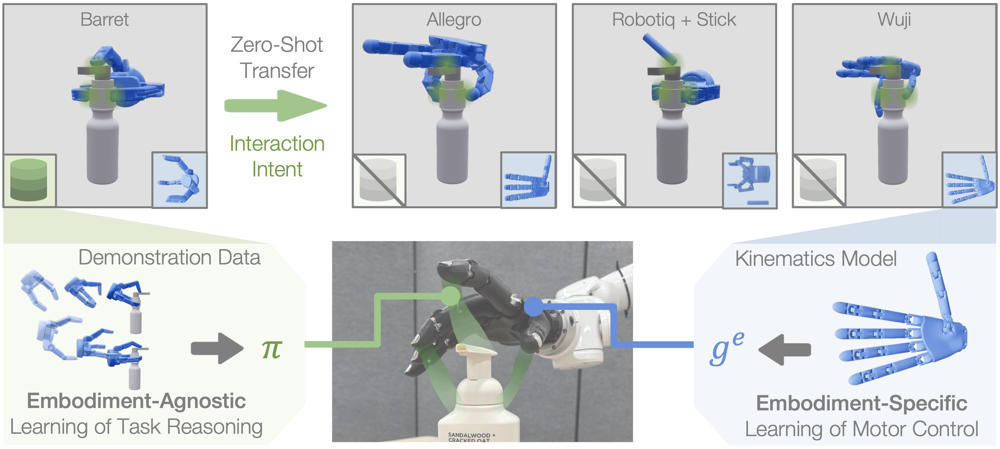
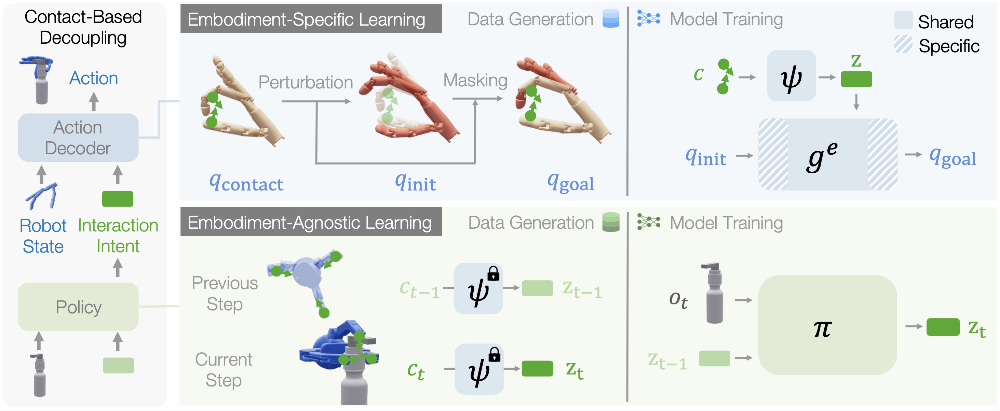

Cube Picking
Cube Picking: A Robotiq gripper source demonstration transfers to three dexterous hands, testing simple-gripper to dexterous-hand zero-shot manipulation.

Generalizing manipulation policies across robot embodiments remains difficult because standard policies entangle task reasoning with embodiment-specific motor control. We study zero-shot cross-embodiment manipulation, where a policy trained on source embodiments must execute on a structurally different target embodiment without additional task demonstrations. We introduce Kinematic Interaction Transfer across Embodiments (KITE), which decouples manipulation into embodiment-agnostic task reasoning and embodiment-specific motor control, connected through a learned latent representation of interaction intent based on contact patterns. Task reasoning is performed by a shared policy that predicts latent interaction intents from source demonstrations, while motor control is performed by an intent-conditioned action decoder learned from each embodiment's kinematics model. With KITE, adaptation to a new embodiment requires only training a new action decoder using its kinematics model, without recollecting demonstration data. We evaluate KITE on three manipulation tasks spanning transfer between parallel grippers, dexterous hands, and composite embodiments. KITE consistently achieves zero-shot transfer to structurally different target embodiments, outperforming state-of-the-art baselines in transfer success and task-embodiment scope.

We decouple manipulation into an embodiment-agnostic policy π and an embodiment-specific action decoder ge, connected by the latent interaction intent z. The interaction intent describes where on the object the manipulator should make contact and in which direction it should act, agnostic to which body produces it. Decoder ge learns from embodiments' kinematic models alone how that body achieves an interaction intent; π learns from source demonstrations preprocessed into latent intents.
We evaluate zero-shot cross-embodiment transfer across three tasks and five embodiments in MuJoCo, including a parallel gripper, different dexterous hands, and a robot composite. For each task, the policy is trained from 800 source-demonstration episodes, while action decoders use only kinematic models with no target-task demonstrations. With no task demonstrations on target embodiments, KITE achieves 90–100% success across all nine transfer settings, beating all baselines by a large margin.
Cube Picking: A Robotiq gripper source demonstration transfers to three dexterous hands, testing simple-gripper to dexterous-hand zero-shot manipulation.
Keyboard Pressing: WujiHand demonstrations press a target key sequence and transfer to dexterous and composite target embodiments through the shared interaction-intent interface.
Bottle Pumping: The source policy transfers a multi-stage interaction that must both lift the bottle and depress the pump, requiring task-relevant contacts to change over time.
We deploy KITE on a physical WujiHand mounted on the Tianji-Marvin arm. All policies are trained in matched simulation and transferred to hardware with no task demonstrations on the target embodiment. KITE succeeds in 7–8 out of 10 trials across all three tasks, confirming zero-shot transfer under real perception and physics. Keyboard pressing and bottle pumping further use a human hand as the source embodiment, showing that the interaction-intent interface extends to human-to-robot transfer.
Cube Picking: Robotiq Gripper → WujiHand reaches 7/10 successes on physical hardware.
Keyboard Pressing: Human Hand → WujiHand reaches 8/10 successes on physical hardware.
Bottle Pumping: Human Hand → WujiHand reaches 7/10 successes on physical hardware.